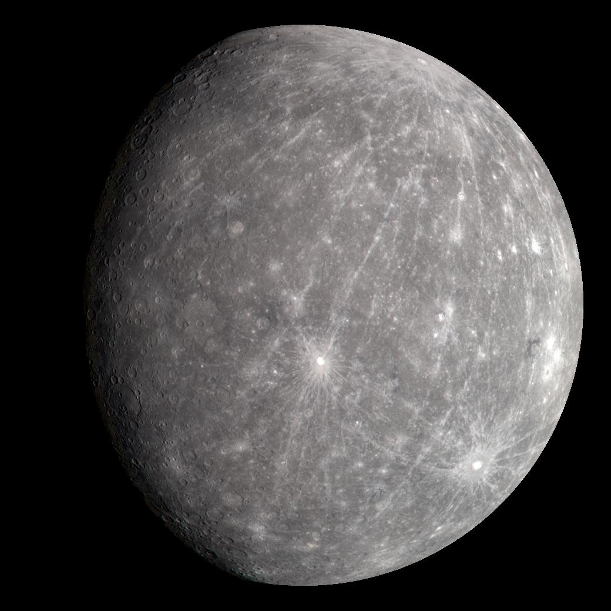

Comparative Planetary Data
| Feature |
Earth |
Mars |
Jupiter |
Mercury |
| Image |
 |
 |
 |
 |
| Mass (1024 kg) |
5.97 |
0.642 |
1,898 |
0.330 |
| Diameter (km) |
12,742 |
6,779 |
139,820 |
4,879 |
| Distance from Sun (106 km) |
149.6 |
227.9 |
778.6 |
57.9 |
| Gravity (m/s²) |
9.8 |
3.7 |
24.8 |
3.7 |
| Length of Day (hours) |
24.0 |
24.6 |
9.9 |
4222.6 |
| Temperature (°C) |
15 |
-63 |
-110 |
167 |
| Number of Moons |
1 |
2 |
79 |
0 |
Interesting Facts
- Earth is the only known planet to support life.
- Mars has the largest volcano in the solar system, Olympus Mons.
- Jupiter is the largest planet and has a distinctive Great Red Spot.
- Mercury is the closest planet to the Sun and has extreme temperature variations.